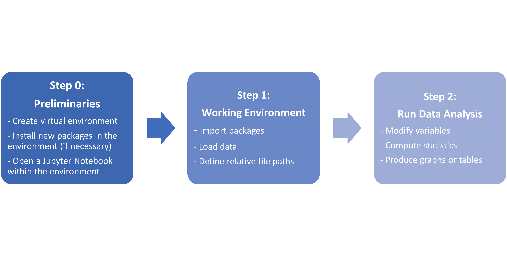
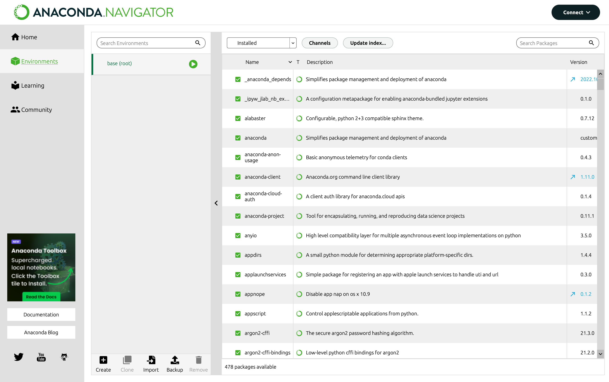
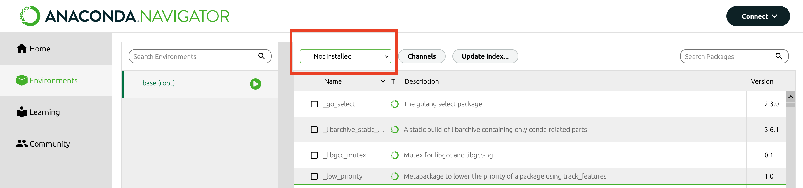
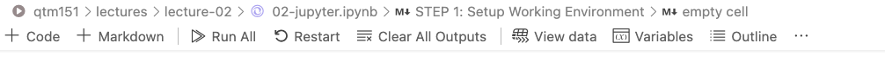
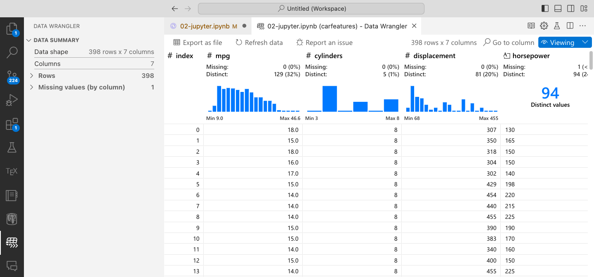
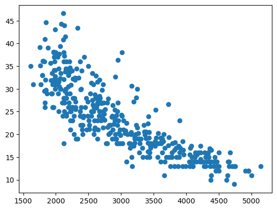

# Notes about nicknames:
# - For example, "matplotlib.pyplot" is a long name. Let's call it "plt"
# - Similarly, let's call "pandas" as "pd"
# - Try adding your own nickname!
# - To avoid errors, be consistent with your nicknames
import matplotlib.pyplot as plt
import pandas as pdLecture 02: Introduction to Jupyter Notebooks
The basic structure for running Python for data projects  - Python is a general purpose language - Researchers and practitioners add new functionalities all the time - New features are included as libraries on top of the “basic” installation
STEP 0: Preliminaries
A Virtual Environment is a directory (folder in your computer)
that contains a specific collection of packagesA package is a folder containing a set of Python scripts or
modules which allow you to accomplish a defined task
(visualisation, analysis, mathematical operations, etc.)
To manage packages open “Anaconda Navigator” on your
computer and go to the “Environment” Tab

In the future, as your data analysis needs expand,
you way want to click on the “Not installed” packages
to download cool new packages!

STEP 1: Setup Working Environment
Double Check that Python is linked to VS Code

- If not already linked, it will say “Select Kernel”
- Click button, choose “Python Environments”, then select
the version of Python that contains the word “anaconda”
- Import Packages:
- Jupyter notebooks launches with very basic options
- The “import” command adds libraries to the working enviroment.
- We can give the libraries a nickname with “as”
matplotlib allows us to do nice graphs in Python
pandas allows us to work with datasets
- Open datasets
Run the command “read_csv” from the library
“pandas” (nicknamed “pd”).
print('Hello, World!')Hello, World!# You can use "." to run subcommands contained in a library.
# The subcommand "read_csv()" opens the file in parenthesis.
# We use the "=" symbol to store the dataset in the working environment under the name "carfeatures"
carfeatures = pd.read_csv('data/features.csv')You can open the datasets in the current environment - Click on the “Variables” button in the top bar to open a panel

- Double click on “carfeatures” in the “Jupyter: Variables” tab.

- Each row is an observation (a car)
- Each column is the value of a variable (a feature of that car)
You can also use a new feature from VS Code to open the dataset in a new tab. Install the Data Wrangler extension and click on the “View Data” button.

You will see the following screen:

STEP 2: Run Analyses
Output data for all the columns
# Entering the name of a dataframe produces an output with some rows
carfeatures| mpg | cylinders | displacement | horsepower | weight | acceleration | vehicle id | |
|---|---|---|---|---|---|---|---|
| 0 | 18.0 | 8 | 307 | 130 | 3504 | 12.0 | C-1689780 |
| 1 | 15.0 | 8 | 350 | 165 | 3693 | 11.5 | B-1689791 |
| 2 | 18.0 | 8 | 318 | 150 | 3436 | 11.0 | P-1689802 |
| 3 | 16.0 | 8 | 304 | 150 | 3433 | 12.0 | A-1689813 |
| 4 | 17.0 | 8 | 302 | 140 | 3449 | 10.5 | F-1689824 |
| ... | ... | ... | ... | ... | ... | ... | ... |
| 393 | 27.0 | 4 | 140 | 86 | 2790 | 15.6 | F-1694103 |
| 394 | 44.0 | 4 | 97 | 52 | 2130 | 24.6 | V-1694114 |
| 395 | 32.0 | 4 | 135 | 84 | 2295 | 11.6 | D-1694125 |
| 396 | 28.0 | 4 | 120 | 79 | 2625 | 18.6 | F-1694136 |
| 397 | 31.0 | 4 | 119 | 82 | 2720 | 19.4 | C-1694147 |
398 rows × 7 columns
Output data for a single column ‘cylinders’
# We use square brackets [...] to subset information from data
# Text/strings have to be written in quotation marks
# This command extracts the column 'cylinders'
carfeatures['cylinders']0 8
1 8
2 8
3 8
4 8
..
393 4
394 4
395 4
396 4
397 4
Name: cylinders, Length: 398, dtype: int64Example: Compute a frequency table
# crosstab counts how many rows fall into categories
# "index" is the category
# "columns" is a custom title
table = pd.crosstab(index = carfeatures['cylinders'], columns = "count")
table| col_0 | count |
|---|---|
| cylinders | |
| 3 | 4 |
| 4 | 204 |
| 5 | 3 |
| 6 | 84 |
| 8 | 103 |
table.columns.name'col_0'table.columns.name = 'column name'
table| column name | count |
|---|---|
| cylinders | |
| 3 | 4 |
| 4 | 204 |
| 5 | 3 |
| 6 | 84 |
| 8 | 103 |
# Try the command again but this time change the column name to something more interesting!Example: Compute basic summary statistics for all variables
# "describe" computes the count, mean, std, min, 25% quantile, 50%, 75%, max
# automatically excludes variables with text values
# otherwise includes all numeric variables
carfeatures.describe()| mpg | cylinders | displacement | weight | acceleration | |
|---|---|---|---|---|---|
| count | 398.000000 | 398.000000 | 398.000000 | 398.000000 | 398.000000 |
| mean | 23.514573 | 5.454774 | 193.427136 | 2970.424623 | 15.568090 |
| std | 7.815984 | 1.701004 | 104.268683 | 846.841774 | 2.757689 |
| min | 9.000000 | 3.000000 | 68.000000 | 1613.000000 | 8.000000 |
| 25% | 17.500000 | 4.000000 | 104.250000 | 2223.750000 | 13.825000 |
| 50% | 23.000000 | 4.000000 | 148.500000 | 2803.500000 | 15.500000 |
| 75% | 29.000000 | 8.000000 | 262.000000 | 3608.000000 | 17.175000 |
| max | 46.600000 | 8.000000 | 455.000000 | 5140.000000 | 24.800000 |
Example: Display a scatter plot
plt.scatter(x = carfeatures['weight'], y = carfeatures['mpg'])
plt.show()
# Try another scatter plot with x = "acceleration"
Pro Tips: How to be a great student for QTM 151?
Please ask clarifying questions and remember to use the GitHub Discussions tab if you have any questions: https://github.com/danilofreire/qtm151/discussions
- Can you explain what this command is doing? –> I don’t mind repeating an explanation!
- What are the arguments of this function?
- What is the output?
- I get an error saying …. (be explicit), what could be the issue?
Remember that good coders …
- build up their toolkit of commands over time
- understand that errors are normal the first time you run a command
- learn to use online websites to interpret errors!!, https://stackoverflow.com/questions/tagged/python
- search help pages to find proper syntax, e.g. https://www.w3schools.com/python/
Experiment
- If we do analyses for variable “A”, try it for “B”
- Search online how to do something extra, e.g. change the color of a scatter plot
- Try running the syntax deliberately wrong: helps you figure out the right logic
- Think long term: Figuring out a puzzle today, means that you can use the code for the next time!
Come to office hours
- Best time for a one-on-one!
- Good place to ask about topics not covered in the lecture